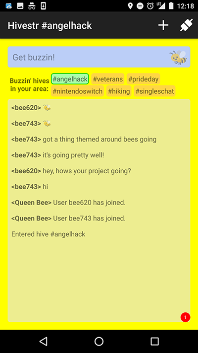
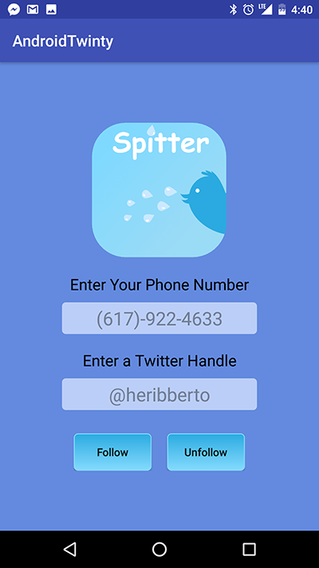
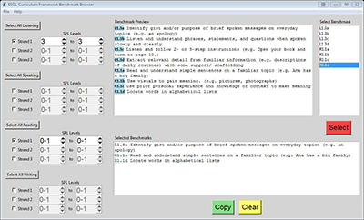
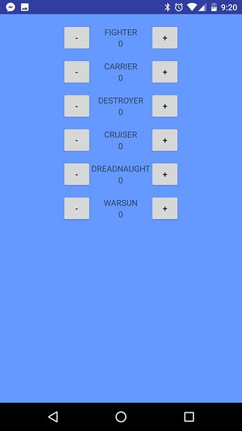

My Projects
Hivestr
A location-based chat client
This was a project done for AngelHack 2017. Our team created a messaging service in Android that allows you to talk with people around you, using GPS-enabled, location-based filtering and Satori's live data API.
Hivestr was runner-up to the grand prize and won an award for best app to help veterans from Operation Code.
Spitter
A Twitter-reading app for the blind
This was a project for BostonHacks 2017. Our team created a service using the Twilio and Twitter APIs that would allow a user to subscribe to a Twitter feed. Whenever a tweet was made from that Twitter account, a call would be placed to the user's phone and the tweet would be read to them.
In short, Spitter speaks Twitter.
The voice changes depending on the emotional cues picked up in the tweet and we developed a front-end Android app to assist users in signing up for the service.
The application was written in Python and hosted on an AWS EC2 instance using Flask and Elastic Beanstalk, with an S3 bucket for storage.
ESOL Curriculum Framework Benchmark Browser
Educating easier
This program is a tool to help ESOL teachers in Massachusetts quickly select benchmarks from the Massachusetts Adult Basic Education Curriculum Framework for English Speakers of Other Languages. It provides a user interface allowing the quick selection of benchmarks depending on the skill level of the students being taught and assists educators in the creation of lesson plans.
The program was created in Python using a SQLite server for the backend and Tkinter for the user interface.
Twilight Imperium Combat Simulator
Tactical analysis at your fingertips
This is an Android application created to simulate interstellar combat for the board game Twilight Imperium. The user enters the number of ships within their own and their enemy's fleet and the application runs simulations to determine likelihood of victory in combat.
